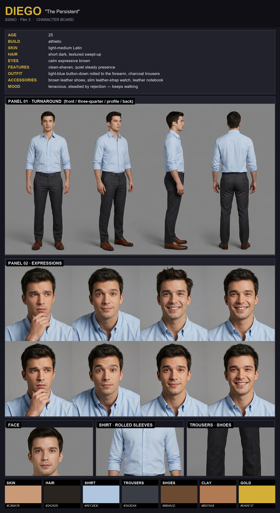
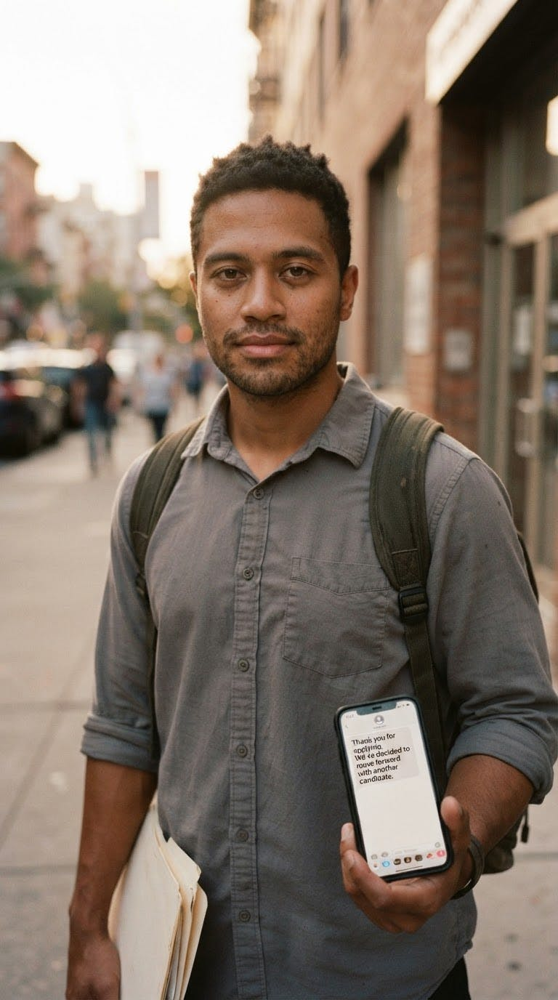
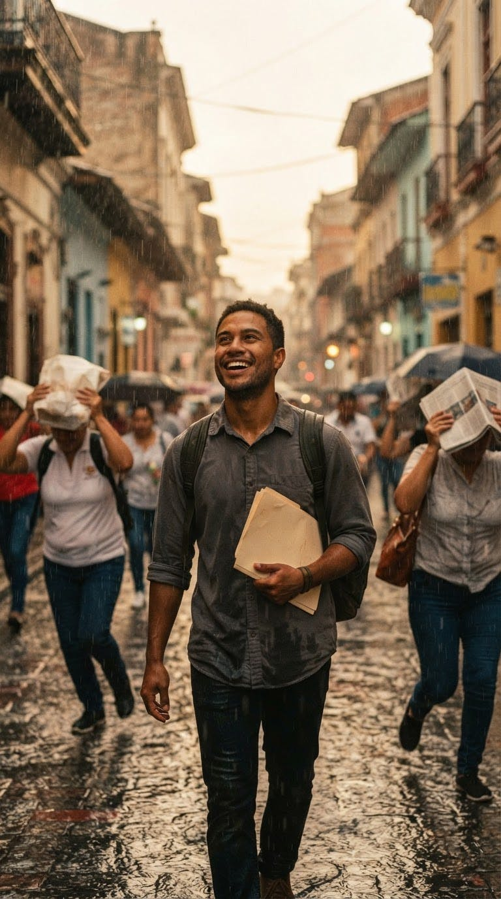
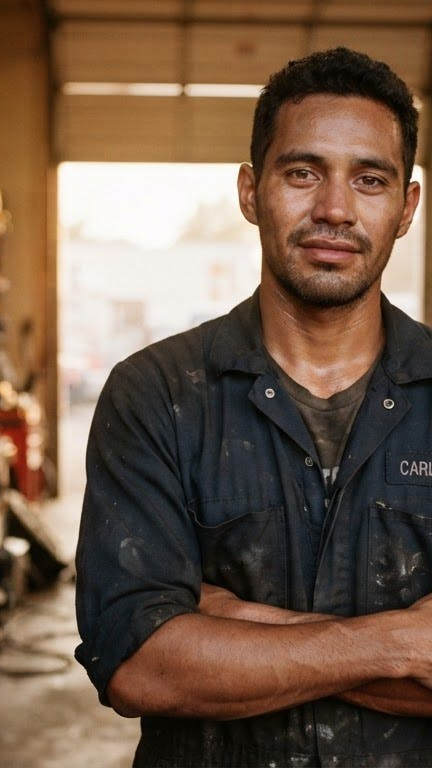
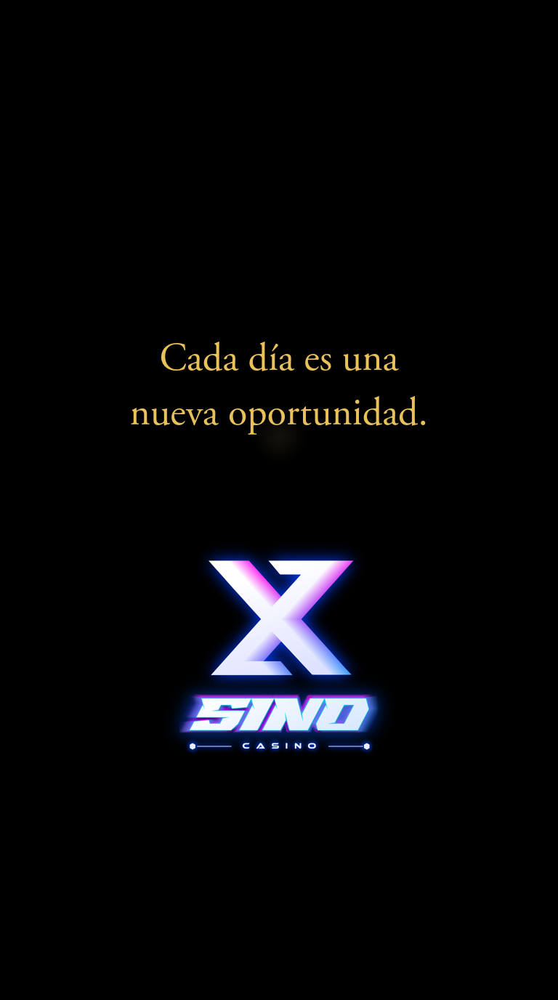

Shot Sheet · Film 03 · OpenArt “Smart Shot” template
EVERY DAY A NEW OPPORTUNITY
Cada Día una Oportunidad
§0 Shared Choices — the consistency contract, decided once
Cut count · lens
12 cuts, 5s each — cut on the finished VO line.
35mm on wides, ~85mm on close-ups: room to breathe, then in on resolve.
35mm on wides, ~85mm on close-ups: room to breathe, then in on resolve.
Palette · gold quarantined
navyvioletmagentacyanwarm keysilvergold
gold = the bench luck-moment (cuts 09–10) + logo close (cut 12)
Environment fingerprint — the world, in order
SOCCER FIELD afternoon→MODERN OFFICE day→INTERVIEW ROOM day→RAINY STREET day→PARK BENCH sunset→BLACK / LOGO
§1 Character Reference — identity lock · reference node = the coherence board

Diego
mid-20s · from the pitch to the interview room · XSINO canon (story 03)
- Skin / ethnicity: mixed South American / Polynesian, warm brown skin, short dark hair, brown eyes, athletic build — reads clearly 21+.
- Wardrobe A (opening): worn red-and-white amateur soccer jersey, black shorts, sneakers.
- Wardrobe B (rest of film): light-blue button-down (sleeves rolled), charcoal-grey trousers, brown leather dress shoes, slim leather watch, leather notebook.
⚠ Consolidation note: Consolidates the 12 existing keyframes as-is — no regeneration. Watch the wardrobe switch (jersey → shirt) is the only intended change; face stays locked to the board.
§2 Set & Camera Map — every location, its cuts, and how the camera moves (from the scene headings)
CUTS 01–02
SOCCER FIELD
afternoon
01 PUSH-IN · WIDE
02 FOLLOW · CLOSE-UP
CUTS 03–04
MODERN OFFICE
day
03 PUSH-IN · MEDIUM
04 PULL-BACK · MEDIUM
CUT 05
INTERVIEW ROOM
day
05 PUSH-IN · MEDIUM
CUTS 06–08
RAINY STREET
day
06 TRACK · CLOSE-UP
07 PULL-BACK · WIDE
08 TRACK · MEDIUM
CUTS 09–11
PARK BENCH
sunset
09 DOLLY-IN · MEDIUM
10 PUSH-IN · CLOSE-UP
11 PULL-BACK · WIDE
CUT 12
BLACK / LOGO
—
12 PUSH-IN · LOGO
Order follows the cut numbers in §3. Movements are derived directly from the story’s MOVE lines — no invented geometry.
§3 Storyboard · 12 cuts — explicit camera grammar: lens | dur | movement | size
CUT 01
35mm5sPUSH-INWIDE
One shot. One second. And everything is decided — or not.
CUT 02
85mm5sFOLLOWCLOSE-UP
He didn't win. But he didn't leave defeated either.
CUT 03
35mm5sPUSH-INMEDIUM
Another door that didn't open. Yet.
CUT 04
35mm5sPULL-BACKMEDIUM
He walked out empty-handed, dignity intact.
CUT 05

35mm5sPUSH-INMEDIUM
We've decided to move forward with another candidate.
CUT 06
85mm5sTRACKCLOSE-UP
One more no. One more step.
CUT 07

35mm5sPULL-BACKWIDE
Everyone ran. He stayed to enjoy it.
CUT 08
35mm5sTRACKMEDIUM
Sometimes you have to get soaked to feel alive.
CUT 09⏱ THE MOMENT
35mm5sDOLLY-INMEDIUM
How come you never give up?
CUT 10★ GOLD
85mm5sPUSH-INCLOSE-UP
Because one day… everything can change.
CUT 11

35mm5sPULL-BACKWIDE
And in that silence, he'd already said it all.
CUT 12★ XSINO

35mm5sPUSH-INLOGO
Believe in new possibilities.
§4 Light · Mood · Style
Light
Flat field light → clean office daylight → grey rain → warm sunset on the bench. The single gold wash lands on cuts 09–10.
Mood arc
Near-miss → rejection → rejection → rain-soaked release → the honest question, and the quiet answer. Persistence, never a promise.
Sound
Sparse piano building to strings; rain as texture; the bench beat drops to near-silence before the logo. Diegetic: whistle, keyboard, rain.
Style words
Photoreal cinematic · 35mm / 85mm · shallow DoF · natural grade · no baked-in subtitles.
XSINO · Lucifer Gaming · Film 03 — EVERY DAY A NEW OPPORTUNITY · consolidated from 12 existing keyframes + coherence board · zero regeneration
21+ · responsible gaming · never promises winning · logo only at the end